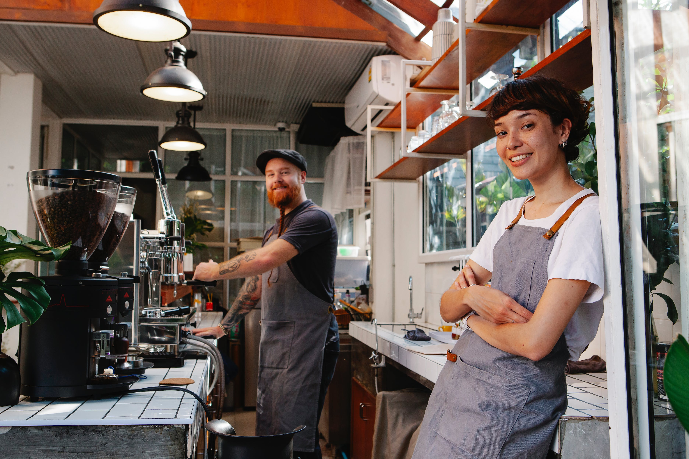

A MézesBéles Cukrászda 2018-ban nyitotta meg kapuit, amikor is Kecske Béla és felesége, inspirálva a magyar kulináris hagyományokból, úgy döntöttek, hogy saját vállalkozást indítanak. A név az egyik legkedveltebb süteményük, a mézes krémes és a meggyes béles összevonásából született, ami kiválóan tükrözi a cukrászda kínálatának sokszínűségét.
Az alapítók célja mindig is az volt, hogy olyan helyet teremtsenek, ahol az emberek nem csak finom süteményeket kóstolhatnak, hanem a hagyományos receptek modern változatait is felfedezhetik. A MézesBéles Cukrászda hamarosan népszerűvé vált a helyiek körében, köszönhetően a kiváló minőségű alapanyagoknak és a szeretettel készített süteményeknek.

Béla és felesége elkötelezettek amellett, hogy folyamatosan újítanak, és a vendégeiket mindig új ízekkel és élményekkel lepjék meg. Az évek alatt a MézesBéles Cukrászda egy igazi közösségi tér lett, ahol a családok és barátok találkozhatnak, és együtt élvezhetik az ízletes süteményeket.
A MézesBéles Cukrászda nem csak egy egyszerű édességbolt a város szívében. Sokkal több annál. Egy olyan hely, ahol a sütemények mögött történetek, emlékek és szenvedélyek húzódnak meg.
Az első év kihívásokkal teli volt, de Béla és felesége sosem adták fel. Folyamatosan kísérleteztek új ízekkel, kombinálták a hagyományos magyar recepteket a modern desszert trendekkel. Nem csak a mézes krémes és a meggyes béles vált népszerűvé, hanem saját kreálmányaik, mint a "Túrós Csokoládé Bomba" vagy a "Málnás Makarón Torta" is.
Az évek során a cukrászda a város kulturális központjává vált. Nem csak egy hely, ahova süteményért jössz, hanem ahol találkozhatsz a barátaiddal, megünnepelhetsz egy születésnapot, vagy csak elmerülhetsz egy jó könyvben a kedvenc kávéd társaságában. A gyerekeknek külön sarok is kialakításra került, ahol játszhatnak, miközben a szülők pihennek.
Béla és felesége nem csak az ízletes süteményekkel szeretnének boldogságot cselezni az emberek életébe, hanem közösségi programokkal, süteménysütő tanfolyamokkal és jótékonysági rendezvényekkel is hozzájárulnak a város életéhez.
Kecske Béla és felesége nem csak vállalkozók, hanem életművészek is. Mindkettőjüknek erős gyökereik vannak a magyar kultúrában, és szívük mélyén mindig is tudták, hogy valamit létre akarnak hozni, amit generációk óta ápolnak és továbbítanak.
Béla a Borsod megyei kisvárosban, Miskolcon született, egy családi házban, melyet ősei generációk óta birtokoltak. Itt nőtt fel a nagymamája meséi között, hallgatva a régi időkről, a családi hagyományokról és a konyhai titkokról. A kertben álló méhkasokról kapta a "MézesBéla" becenevet, ami később az üzlet nevében is megjelent.
Felesége, Erzsébet, egy szomszédos faluban élt, és gyakran találkoztak a helyi vásárokon és falunapokon. Ő egy igazi városi lány volt, tele ambícióval és álmokkal. Mindig is tudta, hogy nagy dolgokat akar elérni, és mikor találkozott Bélával, rájött, hogy közös célokat és álmokat osztanak meg.
Mikor összeházasodtak, nem csak egy életet, hanem egy álmot is közösen építettek. A MézesBéles Cukrászda megnyitása nem volt könnyű döntés, de mindketten hitték, hogy az emberek értékelni fogják a minőségi, kézzel készített édességeket és a családi hagyományokat, amelyeket magukkal hoztak.
Az évek során Béla és Erzsébet sok kihívással szembesült, de soha nem adták fel. Mindig is hitték, hogy a szenvedély, a munka és az elszántság meghozza gyümölcseit. Az üzlet sikere mellett ők ketten is együtt nőttek, tanultak egymástól, és megtanulták, hogyan dolgozzanak együtt, hogy megvalósítsák közös álmaikat.
A MézesBéles Cukrászda ma már nem csak egy vállalkozás. Egy életérzés, egy hagyomány és egy találkozási pont, ahol az emberek összehozhatják a múltat a jelennel és a jövővel.